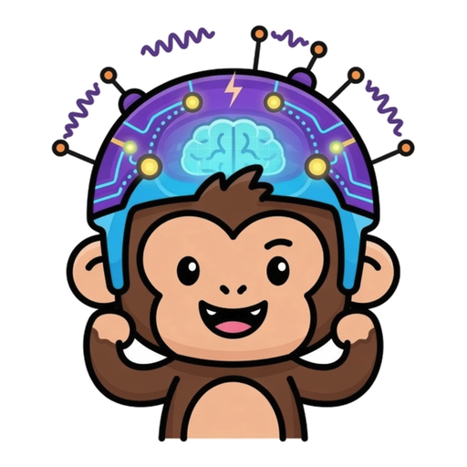

active_monkey is a documented self-lab for creature-like agency. It uses tiny artificial ecologies to ask when information becomes worth representing inside the system itself: first as sensing, then as organ-like persistence, later as belief, communication, and world models.

Most AI starts with a task and asks how smart the model can get. This lab starts with persistence: a tiny system in a world with resource pressure, sensory limits, competition, memory, and consequences.
A variable matters only if it changes whether the creature can continue, reproduce, or act better.
The central question is when a world variable becomes worth sensing, remembering, compressing, or communicating from the creature's side.
A result counts only when direct reward, trivial baselines, seed accidents, and observer-only explanations have been made hard to confuse with the claim.
The public story is not experiment 1 versus experiment 3. It is a self-lab with a spine: build minimal conditions where information becomes meaningful to the system itself.
Energy, depletion, temperature, competition, and lineage pressure make some information useful and most information ignorable.
A world variable becomes accessible. The test is whether the ecology makes the sensor useful without rewarding the sensor directly.
A sensor becomes persistent, costly, and maintained. The capability has to pay for itself across generations.
The creature carries internal estimates of hidden state: what is nearby, depleted, dangerous, useful, or surprising.
Signals matter when they change another creature's belief or action. Learned world models matter when explicit beliefs stop scaling.
The project is a public notebook for one research direction: how small artificial systems become more creature-like under pressure, and which explanations survive attempts to break them.
Find conditions where a costly sensor is not merely expressed but maintained.
Track what the creature can observe, predict, and update separately from what the outside observer can see.
Use learned latent beliefs when explicit belief variables stop scaling, not as a shortcut around the ecology.
The current open problem is whether a creature-like loop can develop action-relevant internal structure under pressure, and whether that structure survives falsifiers.
The experiment log stays because the failures are part of the map. Every serious claim should be traceable back to a script, seed block, output file, and failure condition.